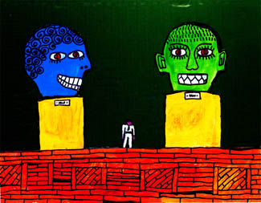
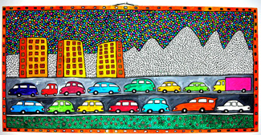
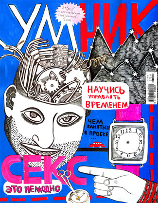
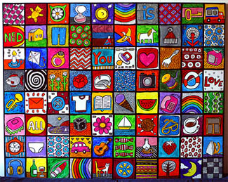

ВЫСТАВКА АНИ ВСЕСВЯТСКОЙ
All you need is love
Я, знаете, не верю в талант. Не в том смысле, что такой вещи не существует – а в том, что для успешной работы в любой области, включая искусство (и соответственно иллюстрацию), он не так уж и важен.
Я верю, простите, в любовь. В увлечение, которое таланту часто, но необязательно сопутствует. В удовольствие от того, что делаешь. В невозможность не делать. И далее – в опыт. С опытом приходят вопросы, и ответы отыскиваются в два счета. Я, к слову, не просто верю – я своими глазами видел человека, который вдруг принялся рисовать много - без особых признаков того, что принято считать талантом – и за считанные недели вырос на полголовы. Я категорически не верю в образование для тех, кому неинтересно. Но я отвлекся.
Я уже говорил, и не раз, и все равно повторю: удовольствие, которое иллюстратор получает, рисуя – это и есть иллюстраторское обаяние. Это не работает в том случае, если ему просто нравится – его должно переть. В нашем деле самое важное – эмоции, и сообщить их зрителю можно только одним способом: испытывая их.
Знаете, об иллюстрации писать довольно непросто. Далеко не все поддается анализу так ловко, как какой-нибудь Томер Ханука. Самые сильные впечатления я могу описать разве что натянув рубашку на голову и мыча. Так вот, сейчас в магазине «Республика» на Маяковской висит небольшая выставка Ани Всесвятской, (знатного, между прочим, бизнес-иллюстратора) и это именно тот случай. Тут каждая полосочка, каждая цапочка Каждый, так его, кружочек (а их мильоны) просто визжит от удовольствия. От того самого. Я погорячился в позапрошлый раз – Катыхин у нас не самый жизнерадостный.
Аня, я тебя люблю.



